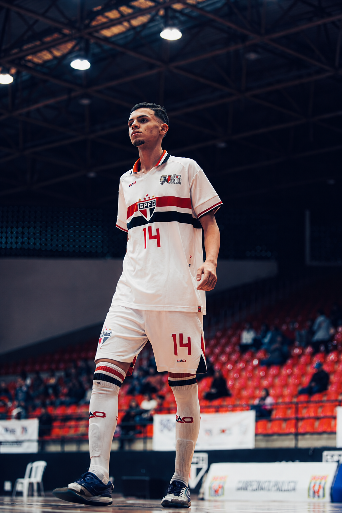
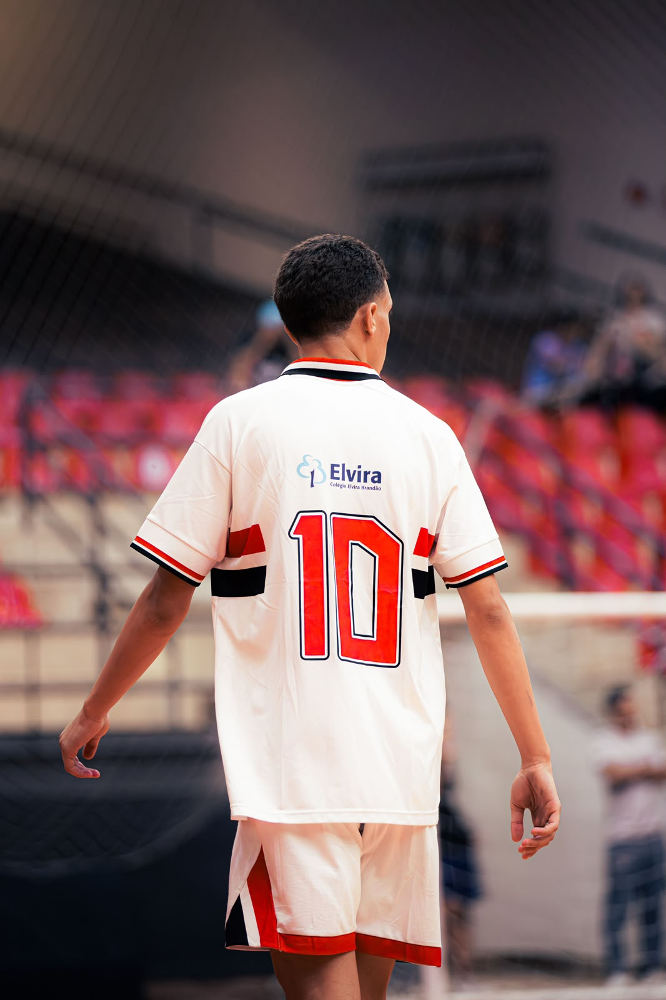
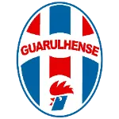
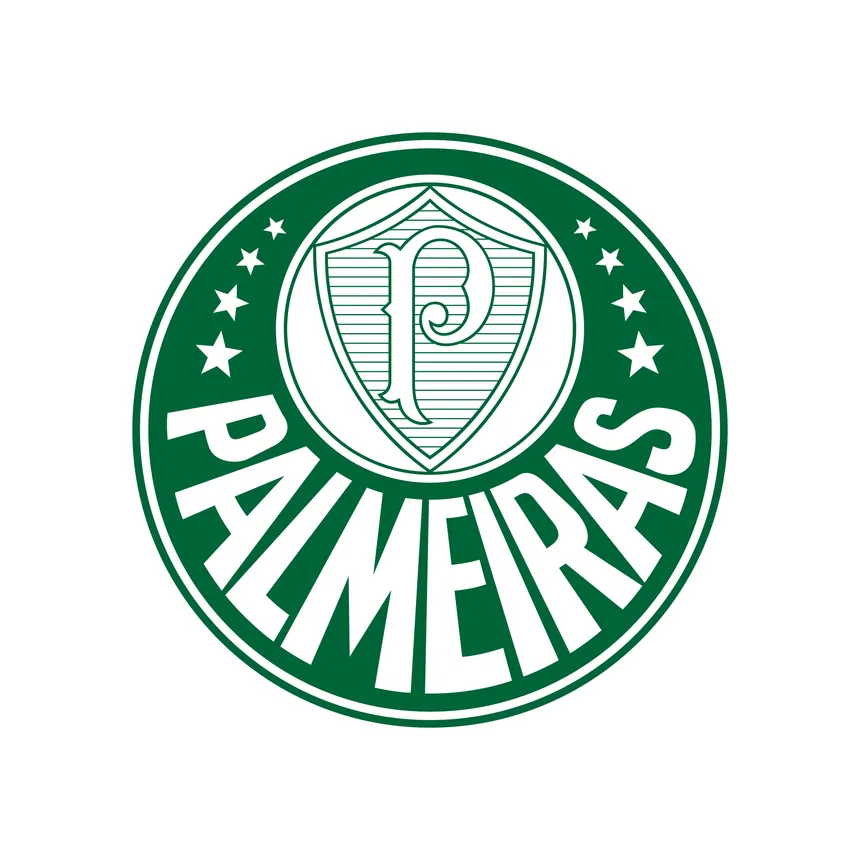

VICTOR MESSIAS AYELLO
Sonho, treino e dedicação todos os dias para ir mais longe.


MAIS QUE UM
ATLETA.
Nascido em 2009, Victor Messias Ayello constrói sua trajetória através do futsal, buscando evolução dentro e fora das quadras.
Dedicação, disciplina e trabalho diário fazem parte da sua caminhada em busca de novos desafios e oportunidades.
CLUBES QUE FIZERAM
PARTE DA CAMINHADA.
Uma trajetória construída com experiências, aprendizados e evolução em cada etapa.

Guarulhense Futsal

Palmeiras Futsal

Santo André Futsal

São Paulo Futsal
MELHORES
JOGADAS.
Confira uma seleção de jogadas, lances e momentos do atleta dentro das quadras.
ASSISTIR AO DVD
VAMOS
CONVERSAR?
Para parcerias, oportunidades, avaliações ou outros contatos, entre em contato através do Instagram.
ENTRAR EM CONTATO